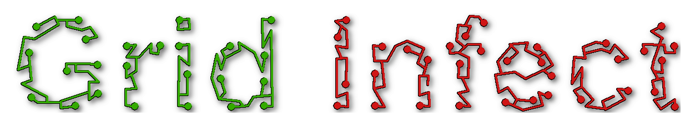

Round 3. Lime B is locked and M3 is the monogram. The G was vanishing at small sizes, the same failure as M1's etched trace: a low-contrast material on a mid-value mask. Three fixes below, each on all three skins, and the wordmark redrawn with the same G material so icon and logo stay one object.
Round 2. D is the wordmark. Below: D refined and run across the three skins with two lime candidates for tan, a wavefront variant for the title screen, and four monogram candidates that speak the bug-and-trace language you liked. Round 1 stays at the bottom for the record.

What fails against the style guide: the traces wander with no routing grid, red is paint rather than light, the two words are the same material in two colors, and there is no bug in it. What works: traces with pads read as circuitry instantly, and the green/red split already encodes dormant versus infected.
| Direction | Reads at 32 px | Carries the concept sentence | Icon falls out of it | Verdict |
|---|---|---|---|---|
| A · Etch and light | Yes, both words | Yes. Grid is substrate, Infect is light, bug is the source | GI monogram, same grammar | Pick |
| B · Board wordmark | Two lines needed, pixel font reads retro | Yes, literally | Strong 3×3 icon | Loses as the mark. Keep as a level-select or splash motif |
| C · Silkscreen | Yes | Only the bug carries it. Type is generic | Bug alone, no letterform tie | Fallback for text-only contexts (store listing, credits) |
| D · Glass type | Glow smears at small sizes | Yes, material split | Weak, a letter of glass is a tile | Loses to A. Same idea, less circuitry, worse reduction |